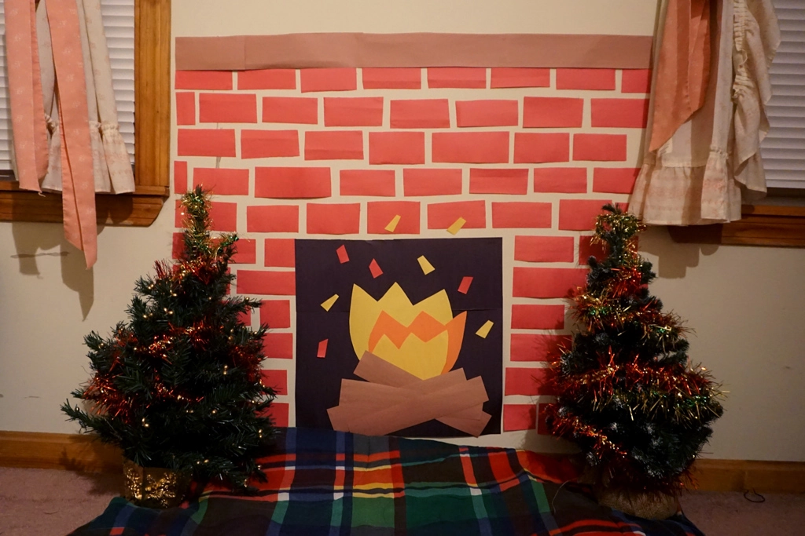
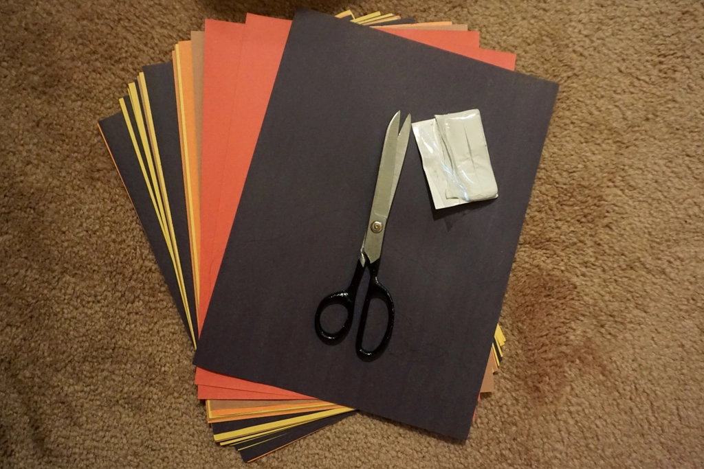
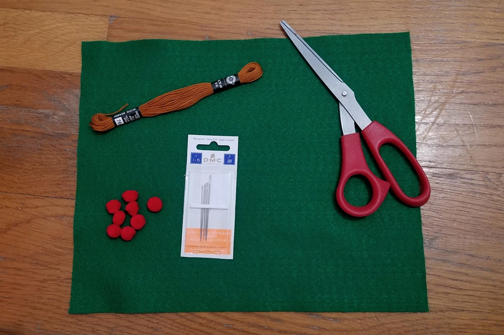
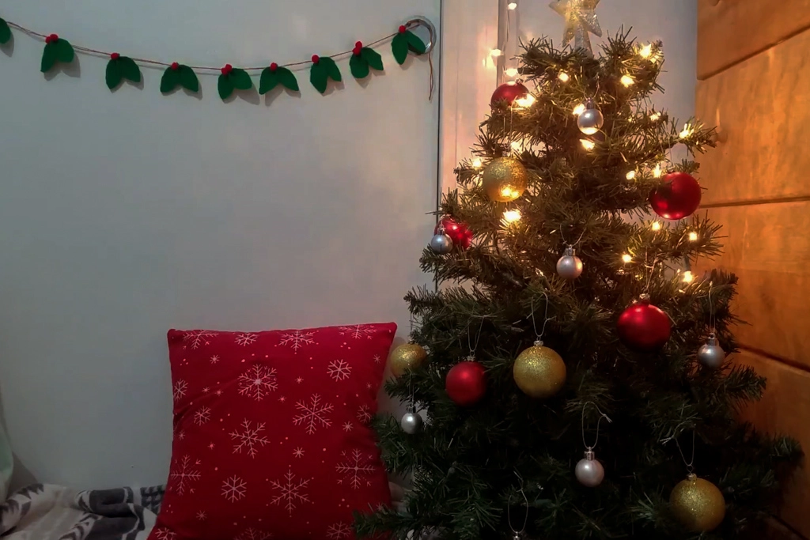

DIY Holiday Decor
Dec 17 - Written by Bonnie and Emily
If you’ve read some of our other holiday blog posts you’ll know that we’ve given you some ideas on ways you can make your room or home holiday movie night ready! But of course we wanted to show you all a little bit more in detail some cost saving and fun ways to create your own crafts that will keep your room festive and cozy this holiday season.
We got together virtually to create these crafts, turning decorating into another virtual hangout you can also do with your friends! Here we created two DIY decorations that we thought were cute, easy, and cheap to recreate in your own home.
Since a toasty fireplace isn’t common in many homes and may not always be the easiest thing to install, we came up with this substitute you can keep in your home all winter long. You just need three materials to create this construction paper fireplace! All you have to do is find a small section of your wall and start taping paper bricks, firewood, and flames to make this cozy little spot to watch your holiday movie in. To make your fireplace even more realistic, you can add a portable electric heater nearby or put the Netflix virtual fireplace movie on next to you!

Paper Fireplace Materials

Holly Garland Materials
This other DIY decoration may require a few more materials but is super quick and just as easy to make-- felt garlands! Make this super cute decoration to hang on your walls, furniture, or the DIY fireplace we just talked about above to keep your home looking cute and festive. All you need to do is cut leaf shapes out of your felt before sewing them through some embroidery string! To add a pop of color and more detail to your felt garland, you can hot glue some pompoms or more felt to make it look like little berries.
